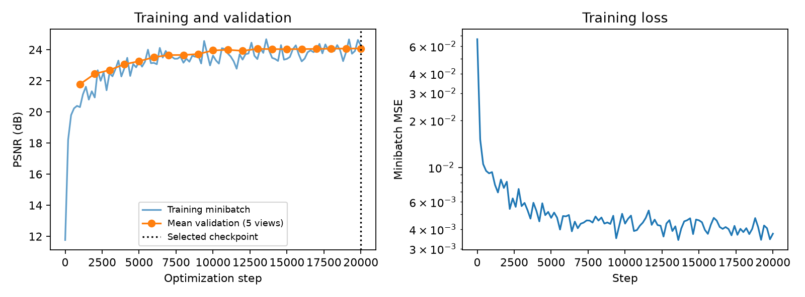
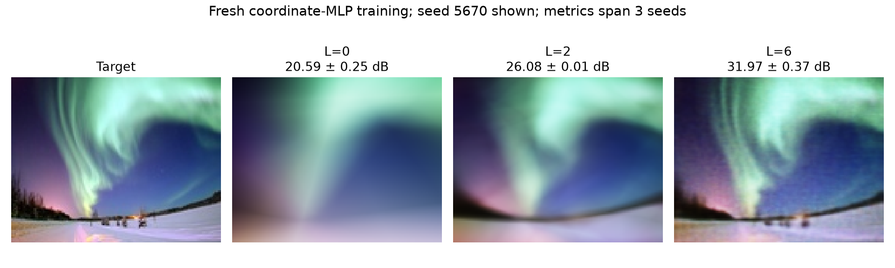
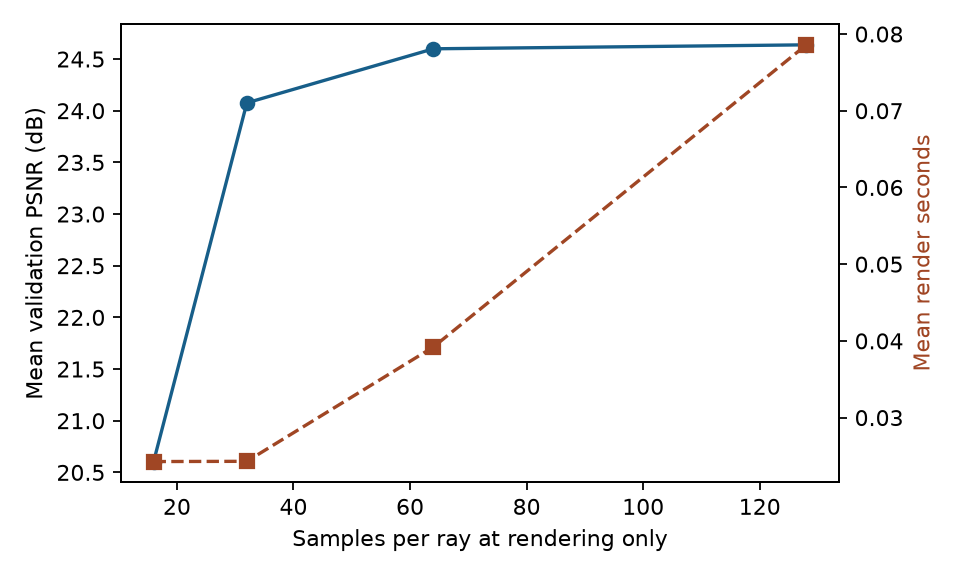
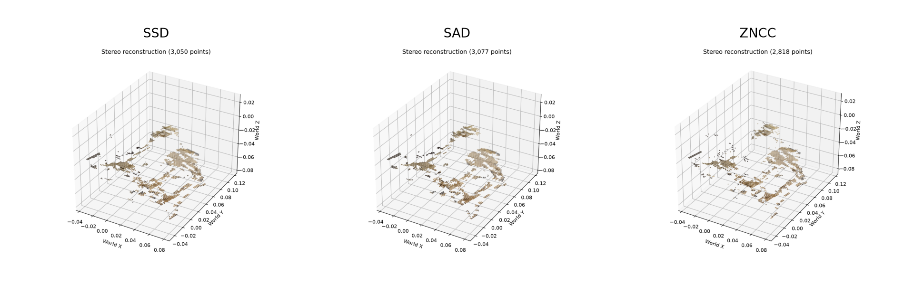

Calibrated Stereo &
Audited Neural Rendering
From known camera poses to colored geometry and synthesized views—with traceable baselines, controlled experiments, and independent evaluation.

A reproducible experiment, with the assumptions exposed.
Geometric audit
Camera +Z was already forward. A cross-view epipolar check exposed the incorrect image-y sign; projection tests now enforce the corrected convention. Original code and checkpoints remain traceable.
Selection before testing
90 training views, five validation views, six test views. Validation PSNR selects checkpoint step 20000; test images do not choose weights or inference samples. A 20000-step RTX 4070 Ti run took 1.7 minutes.

Position encoding and image detail
Equal optimizer, steps and minibatch streams across L=0/2/6; three seeds. Scores measure reconstruction of the fitted image. Encoding increases the first-layer parameter count.

| Frequency | PSNR ± SD (dB) | Mean SSIM |
|---|---|---|
| L=0 | 20.59 ± 0.25 | 0.652 |
| L=2 | 26.08 ± 0.01 | 0.802 |
| L=6 | 31.97 ± 0.37 | 0.908 |
More samples, fixed weights
A single checkpoint trained with 32 samples is rendered with 16/32/64/128 samples on validation views. This isolates inference settings; it does not measure changes to training sample count.

| Samples | Val PSNR | Val SSIM | Seconds/view |
|---|---|---|---|
| 16 | 20.60 | 0.717 | 0.024 |
| 32 | 24.08 | 0.813 | 0.024 |
| 64 | 24.60 | 0.826 | 0.039 |
| 128 | 24.64 | 0.827 | 0.079 |
Stereo coverage, consistency, and cost
Three image pairs, identical resolution, patch and filtering settings. Timing is the mean of per-pair medians from three repeats. Point counts sum separate pair results. No depth ground truth is available: these are not accuracy scores.
| Kernel | Seconds/pair | LR pass | Final coverage | Points |
|---|---|---|---|---|
| SSD | 0.411 | 48.8% | 31.1% | 9631 |
| SAD | 0.414 | 48.0% | 30.9% | 9590 |
| ZNCC | 0.298 | 42.8% | 30.6% | 9486 |

What the results do—and do not—show
The lowest test score is 22.68 dB (view 101). Remaining artifacts, thin structures and view-dependent effects are visible in the error panels. One scene, known poses and six test views do not establish real-world generalization. Stereo retains holes and outliers; depth coverage is not depth accuracy. NeRF uses one training seed.
Contribution boundary
The course supplied the problem, data, architecture and framework. This extension adds convention checks, a ray-sign correction, validation-selected training, independent metrics and controlled comparisons, with coding-assistant support. It is neither a new algorithm, a SLAM system, nor a dynamic world model.
Inspect and reproduce
Recorded configurations, hardware, random seeds, checkpoint/data hashes, per-view metrics and commands are in the report. The implementation remains local pending publication clearance.
python -m vision5800.research train --output outputs/formal_nerf python -m vision5800.research test --run outputs/formal_nerf --output outputs/formal_test python scripts/compare_stereo.py